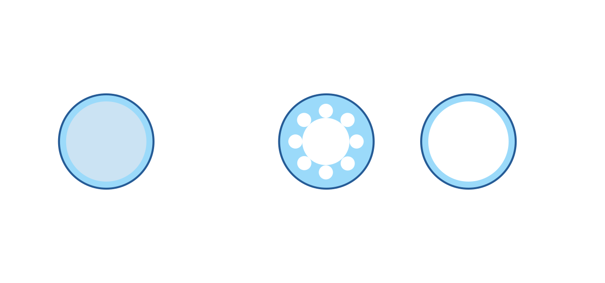

Applications of Hollow Core Fibers to Ultrafast Laser Pulse
LCLS Engineering Seminar Series
Matt Bain | March 23, 2026
Fiber Types

Solid Core Fiber
Core: solid silica glass (n ≈ 1.45)
Cladding: doped silica, slightly lower n
Guidance via Total Internal Reflection (TIR)
Requires ncore > ncladding
Light travels inside glass — subject to material dispersion and nonlinearity
Hollow Core Fiber
Core: air or vacuum (n ≈ 1.00)
Cladding: microstructured silica (photonic crystal or anti-resonant rings)
TIR is not possible — ncore < ncladding
Guidance via Photonic Bandgap or Anti-Resonant Reflection
Light travels through air — dramatically reduced dispersion and nonlinearity
The inversion of refractive index contrast is the key distinction: hollow core guidance requires
structural engineering of the cladding rather than a simple step-index boundary.